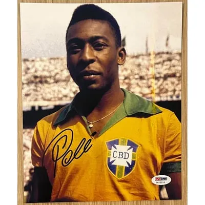
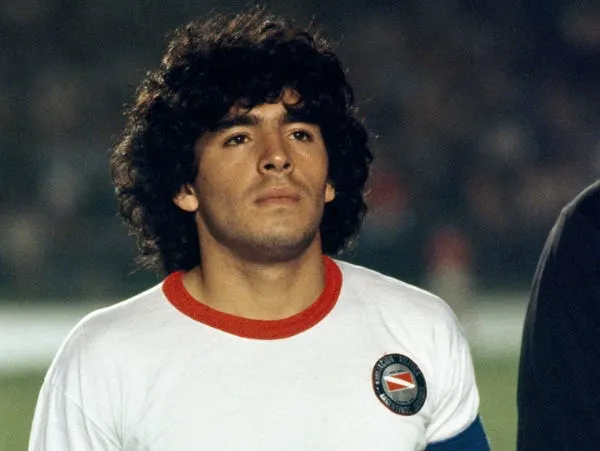
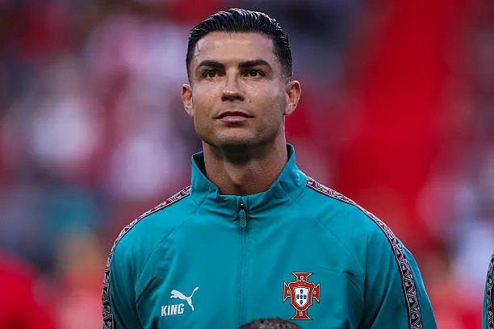
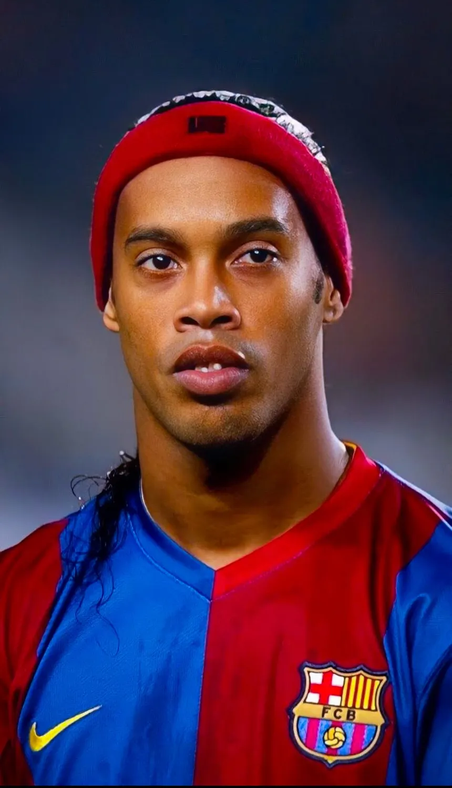

Pelé
Brasil
Considerado um dos maiores jogadores da história, Pelé conquistou três Copas do Mundo com a Seleção Brasileira, em 1958, 1962 e 1970.

Diego Maradona
Argentina
Maradona foi um dos maiores jogadores argentinos. Foi o principal destaque da Argentina na conquista da Copa do Mundo de 1986.
Lionel Messi
Argentina
Messi conquistou diversos títulos por clubes e pela seleção argentina, incluindo a Copa do Mundo de 2022. Também recebeu várias vezes o prêmio Bola de Ouro.

Cristiano Ronaldo
Portugal
Cristiano Ronaldo marcou época em grandes clubes europeus. É conhecido pela grande quantidade de gols, títulos e recordes conquistados durante sua carreira.
Ronaldo Fenômeno
Brasil
Ronaldo foi um dos grandes atacantes da história. Campeão mundial em 1994 e 2002, foi protagonista da Seleção Brasileira na conquista do pentacampeonato.

Ronaldinho Gaúcho
Brasil
Conhecido pela habilidade e criatividade, Ronaldinho conquistou a Copa do Mundo de 2002, a Champions League e a Bola de Ouro.